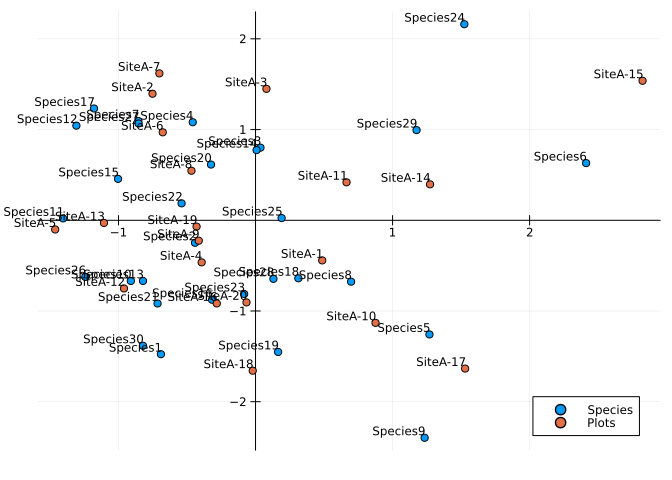

Correspondence Analysis
Outline
This page details how to perform correspondence analysis in Julia following the computational algorithm outlined in appendix A of Greenacre (2017) and implemented in the R package ca (Nenadic and Greenacre 2007).
The Julia package MultivariateStats.jl does not currently contain an implementation of correspondence analysis.
Import Required Packages
using VegSci
using NamedArrays
using LinearAlgebra
using CSV
using BenchmarkTools
using DataFrames
using PlotsCreate example data
Create example data in the form of a releve by species named matrix, N.
N = VegSci.generate_test_array(rown = 20, coln = 30, meancoloccs = 10, rowprefix = "SiteA-", colprefix = "Species")20×30 Named Matrix{Float64}
Releve ╲ Species │ Species1 Species2 … Species29 Species30
─────────────────┼──────────────────────────────────────────────────────
SiteA-1 │ 0.0 0.0194353 … 0.0 0.0
SiteA-2 │ 0.0 0.0 0.0696649 0.0
SiteA-3 │ 0.0 0.0 0.0 0.0
SiteA-4 │ 0.000427213 0.134477 0.0178963 0.0
SiteA-5 │ 0.0 0.0 0.0 0.148943
SiteA-6 │ 0.0 0.0 0.00461977 0.0
SiteA-7 │ 0.0 0.0 0.143256 0.0
SiteA-8 │ 0.0 0.195227 0.0 0.0
SiteA-9 │ 0.0 0.0 0.0 0.0
SiteA-10 │ 0.0 0.058075 0.0899067 0.035945
SiteA-11 │ 0.0 0.0 0.106392 0.0
SiteA-12 │ 0.0901935 0.0 0.0 0.0314749
SiteA-13 │ 0.0 0.142555 0.0 0.0429764
SiteA-14 │ 0.0 0.053224 0.0811444 0.0
SiteA-15 │ 0.0 0.0 0.227249 0.0
SiteA-16 │ 0.124641 0.0667531 0.117698 0.174523
SiteA-17 │ 0.0 0.0 0.0 0.0
SiteA-18 │ 0.00510619 0.0 0.0 0.13201
SiteA-19 │ 0.0 0.0 0.0552819 8.90951e-5
SiteA-20 │ 0.0720213 0.0320998 … 0.0 0.0534477A.1 Create the correspondence matrix
Calculate the correspondence matrix P following.
\[P = \frac{1}{n}N\]
begin
n = sum(N)
P = N / n
end20×30 Named Matrix{Float64}
Releve ╲ Species │ Species1 Species2 … Species29 Species30
─────────────────┼──────────────────────────────────────────────────────
SiteA-1 │ 0.0 0.000971766 … 0.0 0.0
SiteA-2 │ 0.0 0.0 0.00348324 0.0
SiteA-3 │ 0.0 0.0 0.0 0.0
SiteA-4 │ 2.13607e-5 0.00672387 0.000894816 0.0
SiteA-5 │ 0.0 0.0 0.0 0.00744713
SiteA-6 │ 0.0 0.0 0.000230988 0.0
SiteA-7 │ 0.0 0.0 0.00716281 0.0
SiteA-8 │ 0.0 0.00976134 0.0 0.0
SiteA-9 │ 0.0 0.0 0.0 0.0
SiteA-10 │ 0.0 0.00290375 0.00449534 0.00179725
SiteA-11 │ 0.0 0.0 0.00531959 0.0
SiteA-12 │ 0.00450967 0.0 0.0 0.00157374
SiteA-13 │ 0.0 0.00712775 0.0 0.00214882
SiteA-14 │ 0.0 0.0026612 0.00405722 0.0
SiteA-15 │ 0.0 0.0 0.0113625 0.0
SiteA-16 │ 0.00623204 0.00333766 0.00588489 0.00872613
SiteA-17 │ 0.0 0.0 0.0 0.0
SiteA-18 │ 0.00025531 0.0 0.0 0.00660048
SiteA-19 │ 0.0 0.0 0.0027641 4.45475e-6
SiteA-20 │ 0.00360107 0.00160499 … 0.0 0.00267238A.2 Calculate column and row masses
Calculate the row and and column masses.
\[r = P1 \space \space r_{i} = \sum^{J}_{j = 1} P_{ij}\]
\[c = P^{t}1 \space \space c_{j} = \sum^{I}_{i = 1} P_{ij}\]
r = vec(sum(P, dims = 2))20-element Vector{Float64}:
0.04999999999999999
0.05
0.049999999999999996
0.05
0.05
0.05000000000000001
0.049999999999999996
0.05000000000000002
0.049999999999999996
0.049999999999999996
0.05
0.05
0.04999999999999999
0.05
0.05
0.049999999999999996
0.049999999999999996
0.05000000000000001
0.05
0.05000000000000001c = vec(sum(P, dims = 1))30-element Vector{Float64}:
0.014619445973046706
0.03509231182945023
0.03589283669337291
0.029367840998973965
0.04947051366778396
0.06064577028960117
0.04090819345813372
0.04564169444902769
0.02373947255221797
0.021093922253387326
0.020449717016982328
0.03207210004060173
0.03702455282540353
⋮
0.022111797383714542
0.03073095440896969
0.037631473465615455
0.03458500369347802
0.034051447448272584
0.03175179212980403
0.04626555592464588
0.017683122018486937
0.05163712647655302
0.02333155190680658
0.04565546279942191
0.030970392169786434A.3 Diagonal matrices of row and column masses
Dr = Diagonal(r)20×20 Diagonal{Float64, Vector{Float64}}:
0.05 ⋅ ⋅ ⋅ ⋅ ⋅ … ⋅ ⋅ ⋅ ⋅ ⋅ ⋅
⋅ 0.05 ⋅ ⋅ ⋅ ⋅ ⋅ ⋅ ⋅ ⋅ ⋅ ⋅
⋅ ⋅ 0.05 ⋅ ⋅ ⋅ ⋅ ⋅ ⋅ ⋅ ⋅ ⋅
⋅ ⋅ ⋅ 0.05 ⋅ ⋅ ⋅ ⋅ ⋅ ⋅ ⋅ ⋅
⋅ ⋅ ⋅ ⋅ 0.05 ⋅ ⋅ ⋅ ⋅ ⋅ ⋅ ⋅
⋅ ⋅ ⋅ ⋅ ⋅ 0.05 … ⋅ ⋅ ⋅ ⋅ ⋅ ⋅
⋅ ⋅ ⋅ ⋅ ⋅ ⋅ ⋅ ⋅ ⋅ ⋅ ⋅ ⋅
⋅ ⋅ ⋅ ⋅ ⋅ ⋅ ⋅ ⋅ ⋅ ⋅ ⋅ ⋅
⋅ ⋅ ⋅ ⋅ ⋅ ⋅ ⋅ ⋅ ⋅ ⋅ ⋅ ⋅
⋅ ⋅ ⋅ ⋅ ⋅ ⋅ ⋅ ⋅ ⋅ ⋅ ⋅ ⋅
⋅ ⋅ ⋅ ⋅ ⋅ ⋅ … ⋅ ⋅ ⋅ ⋅ ⋅ ⋅
⋅ ⋅ ⋅ ⋅ ⋅ ⋅ ⋅ ⋅ ⋅ ⋅ ⋅ ⋅
⋅ ⋅ ⋅ ⋅ ⋅ ⋅ ⋅ ⋅ ⋅ ⋅ ⋅ ⋅
⋅ ⋅ ⋅ ⋅ ⋅ ⋅ ⋅ ⋅ ⋅ ⋅ ⋅ ⋅
⋅ ⋅ ⋅ ⋅ ⋅ ⋅ 0.05 ⋅ ⋅ ⋅ ⋅ ⋅
⋅ ⋅ ⋅ ⋅ ⋅ ⋅ … ⋅ 0.05 ⋅ ⋅ ⋅ ⋅
⋅ ⋅ ⋅ ⋅ ⋅ ⋅ ⋅ ⋅ 0.05 ⋅ ⋅ ⋅
⋅ ⋅ ⋅ ⋅ ⋅ ⋅ ⋅ ⋅ ⋅ 0.05 ⋅ ⋅
⋅ ⋅ ⋅ ⋅ ⋅ ⋅ ⋅ ⋅ ⋅ ⋅ 0.05 ⋅
⋅ ⋅ ⋅ ⋅ ⋅ ⋅ ⋅ ⋅ ⋅ ⋅ ⋅ 0.05Dc = Diagonal(c)30×30 Diagonal{Float64, Vector{Float64}}:
0.0146194 ⋅ ⋅ … ⋅ ⋅ ⋅
⋅ 0.0350923 ⋅ ⋅ ⋅ ⋅
⋅ ⋅ 0.0358928 ⋅ ⋅ ⋅
⋅ ⋅ ⋅ ⋅ ⋅ ⋅
⋅ ⋅ ⋅ ⋅ ⋅ ⋅
⋅ ⋅ ⋅ … ⋅ ⋅ ⋅
⋅ ⋅ ⋅ ⋅ ⋅ ⋅
⋅ ⋅ ⋅ ⋅ ⋅ ⋅
⋅ ⋅ ⋅ ⋅ ⋅ ⋅
⋅ ⋅ ⋅ ⋅ ⋅ ⋅
⋅ ⋅ ⋅ … ⋅ ⋅ ⋅
⋅ ⋅ ⋅ ⋅ ⋅ ⋅
⋅ ⋅ ⋅ ⋅ ⋅ ⋅
⋮ ⋱
⋅ ⋅ ⋅ ⋅ ⋅ ⋅
⋅ ⋅ ⋅ ⋅ ⋅ ⋅
⋅ ⋅ ⋅ … ⋅ ⋅ ⋅
⋅ ⋅ ⋅ ⋅ ⋅ ⋅
⋅ ⋅ ⋅ ⋅ ⋅ ⋅
⋅ ⋅ ⋅ ⋅ ⋅ ⋅
⋅ ⋅ ⋅ ⋅ ⋅ ⋅
⋅ ⋅ ⋅ … ⋅ ⋅ ⋅
⋅ ⋅ ⋅ ⋅ ⋅ ⋅
⋅ ⋅ ⋅ 0.0233316 ⋅ ⋅
⋅ ⋅ ⋅ ⋅ 0.0456555 ⋅
⋅ ⋅ ⋅ ⋅ ⋅ 0.0309704A.4 Calculate the matrix of standardized residuals
\[SR = D_{r}^{-\frac{1}{2}}(P - rc^{T})D_{c}^{-\frac{1}{2}}\]
SR = Dr^(-1/2) * (P - r * transpose(c)) * Dc^(-1/2)20×30 Named Matrix{Float64}
Releve ╲ Species │ Species1 Species2 … Species29 Species30
─────────────────┼──────────────────────────────────────────────────────
SiteA-1 │ -0.0270365 -0.018689 … -0.0477784 -0.0393512
SiteA-2 │ -0.0270365 -0.0418881 0.0251258 -0.0393512
SiteA-3 │ -0.0270365 -0.0418881 -0.0477784 -0.0393512
SiteA-4 │ -0.0262464 0.118631 -0.0290499 -0.0393512
SiteA-5 │ -0.0270365 -0.0418881 -0.0477784 0.149897
SiteA-6 │ -0.0270365 -0.0418881 -0.0429438 -0.0393512
SiteA-7 │ -0.0270365 -0.0418881 0.102139 -0.0393512
SiteA-8 │ -0.0270365 0.191145 -0.0477784 -0.0393512
SiteA-9 │ -0.0270365 -0.0418881 -0.0477784 -0.0393512
SiteA-10 │ -0.0270365 0.0274334 0.0463089 0.00632074
SiteA-11 │ -0.0270365 -0.0418881 0.0635605 -0.0393512
SiteA-12 │ 0.139763 -0.0418881 -0.0477784 0.000641028
SiteA-13 │ -0.0270365 0.128273 -0.0477784 0.0152549
SiteA-14 │ -0.0270365 0.021643 0.0371391 -0.0393512
SiteA-15 │ -0.0270365 -0.0418881 0.190038 -0.0393512
SiteA-16 │ 0.203468 0.0377921 0.0753923 0.182398
SiteA-17 │ -0.0270365 -0.0418881 -0.0477784 -0.0393512
SiteA-18 │ -0.0175933 -0.0418881 -0.0477784 0.128381
SiteA-19 │ -0.0270365 -0.0418881 0.0100741 -0.039238
SiteA-20 │ 0.106156 -0.00357207 … -0.0477784 0.0285598A.5 Calculate the Singular Value Decomposition (SVD) of S
begin
svd = LinearAlgebra.svd(SR)
U = svd.U
S = svd.S
V = svd.V
Vt = svd.Vt
end20×30 Matrix{Float64}:
-0.0834667 -0.0826961 0.00682271 … 0.251056 -0.144487
-0.17851 -0.0465884 0.151652 0.212316 -0.243443
-0.00796133 -0.0844173 -0.373164 0.160262 -0.0153378
0.116301 -0.409847 -0.136538 0.0489854 0.00988207
0.23395 0.0221703 -0.263783 0.281148 0.247465
-0.349158 0.137912 -0.075029 … -0.0403012 -0.151495
-0.0515929 -0.100843 -0.111047 -0.0609628 -0.327441
-0.0593648 -0.288053 0.138508 -0.0758089 0.124046
0.176908 0.0198735 0.00436814 0.213754 0.19303
-0.231456 -0.249872 0.289406 0.0298204 0.0491983
-0.249211 -0.0160094 -0.241274 … 0.170187 0.167615
-0.0592155 -0.140334 -0.305935 -0.0888456 0.20524
-0.0869345 -0.0110949 0.199427 -0.0853508 0.0366431
0.0478385 0.12772 0.159512 -0.0652945 0.211217
-0.276144 -0.385785 0.0301642 -0.0313485 0.084354
0.11944 -0.105737 0.191683 … 0.00969266 0.253721
0.0468818 0.0164498 -0.111568 0.0814418 0.0388592
-0.0622224 0.0127261 -0.118384 -0.44975 0.0350071
0.140203 0.234735 0.171128 0.0814814 -0.404583
-0.0701122 0.225564 0.284214 0.441865 0.0570733A.6 Standard coordinates Φ of rows
\[\Phi = D_{r}^{-\frac{1}{2}} U\]
Φ = Dr^(-1/2) * U20×20 Matrix{Float64}:
0.486723 -0.442572 -0.876122 … 0.254046 0.489505 -1.0
-0.75182 1.39466 -0.596616 0.32767 -0.267702 -1.0
0.0795586 1.44857 -2.18556 -0.199978 0.31754 -1.0
-0.393176 -0.463732 0.15696 -0.781441 0.038266 -1.0
-1.46177 -0.101574 -0.591401 0.13674 -1.14578 -1.0
-0.67707 0.969288 2.40662 … 1.39513 1.22287 -1.0
-0.701642 1.61909 1.31315 -1.6185 -0.879744 -1.0
-0.467516 0.545734 -0.835668 0.30908 0.601337 -1.0
-0.414175 -0.225166 0.107186 -0.861464 0.22724 -1.0
0.875493 -1.13052 0.800475 -0.266995 0.532126 -1.0
0.66402 0.418495 1.89313 … 0.970445 -0.643278 -1.0
-0.959926 -0.751598 -0.347087 -0.959162 0.0138849 -1.0
-1.10606 -0.0296146 -0.596756 0.809426 0.219009 -1.0
1.27339 0.395968 0.159079 -1.32021 -2.58616 -1.0
2.82424 1.5375 -0.477013 0.518197 0.754764 -1.0
-0.282905 -0.916899 0.45193 … -1.07454 1.12809 -1.0
1.52947 -1.63457 -0.164203 -0.516428 0.529459 -1.0
-0.0205451 -1.65816 0.106549 0.316625 -0.87736 -1.0
-0.430282 -0.0697537 -0.220638 -0.194717 1.77731 -1.0
-0.0660135 -0.905134 -0.504006 2.75608 -1.45138 -1.0A.7 Standard coordinates Γ of columns
\[\Gamma = D_{c}^{-\frac{1}{2}} V\]
Γ = Dc^(-1/2) * V30×20 Matrix{Float64}:
-0.690316 -1.47638 -0.0658446 … -0.514614 1.15956 -0.579867
-0.441448 -0.248698 -0.450636 0.0679344 1.25306 1.2041
0.0360125 0.800466 -1.96968 -0.624867 0.903268 1.50017
-0.458192 1.08069 1.87546 0.629929 -1.3847 0.636856
1.26913 -1.2583 -0.0535878 -0.809565 -1.17589 0.447258
2.41248 0.630102 -0.215581 … 1.25435 -0.267925 0.155701
-0.855116 1.09385 -0.955893 2.12418 -0.722948 1.87374
0.697508 -0.677056 0.717372 0.0196432 -0.165995 0.14723
1.23402 -2.39757 -0.343688 -1.0227 0.655229 1.19321
-0.910015 -0.668957 -0.552071 -1.59604 0.25326 2.40986
-1.40475 0.020469 -0.870045 … 0.473242 0.778746 1.20241
-1.30723 1.04309 1.92068 0.688503 1.75375 1.31986
-0.821187 -0.668616 -0.742893 0.957371 0.680027 -0.403676
⋮ ⋱
0.164857 -1.4516 -0.229982 0.733327 2.02525 -0.400124
-0.324777 0.614072 2.07192 0.439287 -0.0821405 0.137366
-0.714961 -0.917316 -0.429153 … -0.366773 0.127898 0.315558
-0.539514 0.186602 -0.453321 0.00484725 -0.142605 0.0371357
-0.083021 -0.812517 -0.698511 0.745157 0.761952 -0.683067
1.52358 2.16096 -1.90084 -0.15332 0.594512 -0.581155
0.190259 0.024423 1.29748 0.309493 0.299518 0.796723
-1.24196 -0.624012 -0.794164 … -0.621717 -1.98432 0.76939
-0.853565 1.06668 -0.512272 -1.05909 -0.879741 -0.641752
0.130569 -0.645774 -0.274613 2.30872 -0.302089 0.99442
1.17496 0.993658 0.750042 -2.10487 0.38134 2.06796
-0.821024 -1.38332 -0.0871545 0.198922 -2.29897 0.32431A.8 Principal coordinates F of rows
\[F = D_{r}^{-\frac{1}{2}} U D_{\alpha} = \Phi D_{\alpha}\]
F = Φ * Diagonal(S)20×20 Matrix{Float64}:
0.305932 -0.262386 -0.485301 … 0.0474502 -1.34177e-16
-0.472559 0.826844 -0.330477 -0.0259497 -1.34177e-16
0.0500069 0.858809 -1.21062 0.0307808 -1.34177e-16
-0.247132 -0.274931 0.0869433 0.00370932 -1.34177e-16
-0.918801 -0.0602196 -0.327588 -0.111066 -1.34177e-16
-0.425575 0.574658 1.33307 … 0.118539 -1.34177e-16
-0.44102 0.959901 0.727378 -0.0852781 -1.34177e-16
-0.293859 0.323547 -0.462893 0.0582907 -1.34177e-16
-0.260331 -0.133493 0.0593724 0.0220275 -1.34177e-16
0.550295 -0.670248 0.443398 0.0515817 -1.34177e-16
0.417372 0.248111 1.04864 … -0.0623563 -1.34177e-16
-0.603365 -0.445597 -0.192258 0.00134593 -1.34177e-16
-0.695217 -0.0175575 -0.330555 0.0212297 -1.34177e-16
0.800394 0.234756 0.0881171 -0.25069 -1.34177e-16
1.77519 0.911532 -0.264227 0.0731632 -1.34177e-16
-0.177821 -0.543598 0.250333 … 0.109352 -1.34177e-16
0.961354 -0.96908 -0.0909551 0.0513232 -1.34177e-16
-0.0129137 -0.983069 0.0590197 -0.0850471 -1.34177e-16
-0.270455 -0.0413546 -0.122215 0.172284 -1.34177e-16
-0.041493 -0.536623 -0.279179 -0.14069 -1.34177e-16A.9 Principal coordinates G of columns
\[G = D_{c}^{-\frac{1}{2}} V D_{\alpha} = \Gamma D_{\alpha}\]
G = Γ * Diagonal(S)30×20 Matrix{Float64}:
-0.433901 -0.875294 -0.0364726 0.502468 … 0.112402 -7.7805e-17
-0.277474 -0.147445 -0.249616 -1.14289 0.121465 1.61563e-16
0.0226358 0.474569 -1.09104 -0.376479 0.0875584 2.01289e-16
-0.287998 0.640706 1.03885 0.690969 -0.134226 8.54516e-17
0.797714 -0.746005 -0.0296833 -0.0171083 -0.113985 6.00119e-17
1.51637 0.373566 -0.119415 0.259734 … -0.0259713 2.08915e-17
-0.537486 0.648504 -0.529488 0.309184 -0.070079 2.51413e-16
0.438421 -0.401403 0.397366 -0.528006 -0.0160907 1.97549e-17
0.775645 -1.42144 -0.190375 0.906115 0.0635147 1.60102e-16
-0.571994 -0.396602 -0.305803 0.590528 0.0245497 3.23349e-16
-0.882961 0.0121354 -0.481935 -0.528949 … 0.0754879 1.61335e-16
-0.821663 0.618414 1.0639 0.327517 0.17 1.77095e-16
-0.51616 -0.396399 -0.411503 0.0290026 0.0659186 -5.41642e-17
⋮ ⋱
0.103622 -0.860604 -0.127391 -0.128968 0.196318 -5.36876e-17
-0.20414 0.364063 1.14768 0.212689 -0.0079623 1.84314e-17
-0.449391 -0.543845 -0.237716 0.536383 … 0.0123978 4.23407e-17
-0.339114 0.11063 -0.251103 0.543679 -0.0138234 4.98277e-18
-0.0521832 -0.481714 -0.386919 0.710026 0.0738599 -9.16521e-17
0.957651 1.28116 -1.05291 0.14797 0.0576291 -7.79778e-17
0.119588 0.0144796 0.718701 0.125351 0.0290339 1.06902e-16
-0.78064 -0.369955 -0.439903 0.710685 … -0.19235 1.03235e-16
-0.536512 0.632398 -0.283758 -0.383387 -0.0852779 -8.61085e-17
0.0820696 -0.382857 -0.152114 -0.650033 -0.029283 1.33429e-16
0.738528 0.589106 0.415463 0.11976 0.0369652 2.77474e-16
-0.516058 -0.820124 -0.0482765 0.0293335 -0.222851 4.3515e-17A.10 Principal inertias λ<sub>k</sub>
\[\lambda_{k} = \alpha_{k}^{2}, k = 1,2,...,\space where \space k = min\{I-1,J-1\}\]
F * Dr * transpose(F)20×20 Matrix{Float64}:
0.111608 -0.00621648 0.00238871 … -0.00190682 -0.00943001
-0.00621648 0.168372 0.019383 0.0126478 -0.0215311
0.00238871 0.019383 0.191052 -0.00470524 0.00799422
-0.0172022 -0.0011774 -0.0189871 -0.0206101 -0.00401321
0.0173567 -0.0193707 0.000861992 0.00392212 -0.0115102
-0.0367434 -0.0198474 -0.0321792 … -0.0139609 -0.0366429
-0.0365044 0.0451249 -0.00200741 0.015891 -0.0300645
-0.00498185 -0.0269155 0.0335267 0.00132939 -0.0156328
-0.0229912 -0.00660581 0.00707136 -0.00754909 0.0237837
-0.00728714 -0.0431406 -0.0378191 -0.0095094 0.0267062
-0.00711515 -0.0142537 -0.0468059 … -0.0117642 -0.0292263
0.00309654 -0.00198345 -0.0164962 0.00728305 0.0360607
-0.0128892 0.0408842 -0.0271626 0.0136309 -0.0189993
0.0116829 -0.0334037 5.20459e-5 -0.00350846 -0.0124359
0.00264352 0.000650844 0.0283163 -0.0362417 -0.022822
-0.0168451 -0.0277517 -0.0404056 … -0.0242476 0.0355322
0.0395399 -0.0443538 -0.0368557 0.0025206 0.00502957
-0.00820328 -0.0205112 -0.0272223 0.00635882 -0.00713614
-0.00190682 0.0126478 -0.00470524 0.063882 0.00653783
-0.00943001 -0.0215311 0.00799422 0.00653783 0.0778G * Dr * transpose(G)30×30 Matrix{Float64}:
0.287853 0.0020899 -0.05 … 0.00497576 0.11076
0.0020899 0.129844 0.0130032 -0.0190987 -0.000360857
-0.05 0.0130032 0.153873 -0.0352912 -0.0291732
-0.00529241 -0.0455742 -0.0329921 0.0243373 -0.0418147
-0.023562 -0.00914246 0.00986709 -0.00640361 -0.0275514
-0.0182422 -0.0193868 -0.00577019 … 0.0754695 -0.0335052
-0.0250851 0.00135759 0.0146238 -0.0034414 -0.0212417
-0.0466778 0.00935246 -0.0376175 0.0168005 -0.000841622
-0.0348982 -0.0422496 -0.018585 -0.05 0.0193547
0.0871981 -0.0433852 -0.0223625 -0.04332 -0.00941375
-0.0498566 0.0502712 0.0303993 … -0.0368006 0.0452482
0.0119569 -0.0415984 -0.0351104 -0.00113308 0.0242462
0.0343865 0.0226615 0.0252612 -0.0303605 0.0441172
⋮ ⋱
-0.0443 0.0285077 -0.0110312 -0.0312327 0.0336166
-0.0474029 -0.0376146 -0.0349975 0.0229156 -0.0192874
0.0767784 -0.0299231 -0.00979266 … -0.0179498 0.0661687
-0.00787155 -0.0268708 0.0176321 -0.0231306 -0.0170495
0.067699 -0.041674 -0.00071316 -0.0350977 -0.0162272
-0.0389861 -0.042058 0.078894 0.0546878 -0.0481857
-0.0438775 -0.0171296 -0.0288536 -0.0110206 -0.040126
0.0496774 0.0339437 -0.0213707 … -0.0449494 0.0304283
-0.0385524 0.00616321 0.0545189 -0.0232554 -0.00913441
0.00719823 0.00789567 -0.00189163 -0.0193612 -0.014159
0.00497576 -0.0190987 -0.0352912 0.0942309 -0.00795953
0.11076 -0.000360857 -0.0291732 -0.00795953 0.150838Create Correspondence Analysis Function
function correspondence_analysis(N::NamedMatrix)
# A.1 Create the correspondence matrix
P = N / sum(N)
# A.2 Calculate column and row masses
r = vec(sum(P, dims = 2))
c = vec(sum(P, dims = 1))
# A.3 Diagonal matrices of row and column masses
Dr = Diagonal(r)
Dc = Diagonal(c)
# A.4 Calculate the matrix of standardized residuals
SR = Dr^(-1/2) * (P - r * transpose(c)) * Dc^(-1/2)
# A.5 Calculate the Singular Value Decomposition (SVD) of S
svd = LinearAlgebra.svd(SR)
U = svd.U
V = svd.V
S = svd.S
D = Diagonal(S)
# A.6 Standard coordinates Φ of rows
Φ_rownames = names(N)[1]
Φ_colnames = vec(["Dim"].*string.([1:1:size(N,1);]))
Φ = NamedArray(Dr^(-1/2) * U, names = (Φ_rownames, Φ_colnames), dimnames = ("Plot", "Dimension"))[1:end,1:end .!= end]
# A.7 Standard coordinates Γ of columns
Γ_rownames = names(N)[2]
Γ_colnames = vec(["Dim"].*string.([1:1:size(N,1);]))
Γ = NamedArray(Dc^(-1/2) * V, names = (Γ_rownames, Γ_colnames), dimnames = ("Species", "Dimension"))[1:end,1:end .!= end]
# A.8 Principal coordinates F of rows
# F = Φ * D
F = Dr^(-1/2) * U * D
F = F[1:end,1:end .!= end]
# A.9 Principal coordinates G of columns
# G = Γ * D
G = Dc^(-1/2) * V * D
G = G[1:end,1:end .!= end]
results = (sv = D, # Singular values
rownames = names(N)[1], # Row names
rowmass = r, # Row masses
# rowdist = , # Row chi-square distances to centroid
# rowinertia = , # Row inertias
rowcoord = Φ, # Row standard coordinates
# rowsup = , # Indicies of row supplementary points
colnames = names(N)[2], # Column names
colmass = c, # Column masses
# coldist = , # Column chi-square distances to centroid
# colinertia = , # Column inertias
colcoord = Γ, # Column standard coordinates
# colsup = , # Indices of column supplementary points
N = N # The frequency table
)
return results
endcorrespondence_analysis (generic function with 1 method)Test Function
ca_results = correspondence_analysis(N)(sv = [0.6285538734975543 0.0 … 0.0 0.0; 0.0 0.592865843166005 … 0.0 0.0; … ; 0.0 0.0 … 0.09693513414686916 0.0; 0.0 0.0 … 0.0 1.3417730517178384e-16], rownames = ["SiteA-1", "SiteA-2", "SiteA-3", "SiteA-4", "SiteA-5", "SiteA-6", "SiteA-7", "SiteA-8", "SiteA-9", "SiteA-10", "SiteA-11", "SiteA-12", "SiteA-13", "SiteA-14", "SiteA-15", "SiteA-16", "SiteA-17", "SiteA-18", "SiteA-19", "SiteA-20"], rowmass = [0.04999999999999999, 0.05, 0.049999999999999996, 0.05, 0.05, 0.05000000000000001, 0.049999999999999996, 0.05000000000000002, 0.049999999999999996, 0.049999999999999996, 0.05, 0.05, 0.04999999999999999, 0.05, 0.05, 0.049999999999999996, 0.049999999999999996, 0.05000000000000001, 0.05, 0.05000000000000001], rowcoord = [0.48672325436211406 -0.4425722994916393 … 0.2540464613662324 0.489504593503425; -0.751819930002042 1.3946556786933388 … 0.32767035864344946 -0.26770202479133304; … ; -0.43028201185575154 -0.06975367528017733 … -0.19471720063454273 1.7773099397488037; -0.06601349449550468 -0.9051343020038952 … 2.756075388482872 -1.4513787339358968], colnames = ["Species1", "Species2", "Species3", "Species4", "Species5", "Species6", "Species7", "Species8", "Species9", "Species10" … "Species21", "Species22", "Species23", "Species24", "Species25", "Species26", "Species27", "Species28", "Species29", "Species30"], colmass = [0.014619445973046706, 0.03509231182945023, 0.03589283669337291, 0.029367840998973965, 0.04947051366778396, 0.06064577028960117, 0.04090819345813372, 0.04564169444902769, 0.02373947255221797, 0.021093922253387326 … 0.037631473465615455, 0.03458500369347802, 0.034051447448272584, 0.03175179212980403, 0.04626555592464588, 0.017683122018486937, 0.05163712647655302, 0.02333155190680658, 0.04565546279942191, 0.030970392169786434], colcoord = [-0.6903160660221958 -1.476377122101793 … -0.514613643518885 1.1595554476895726; -0.4414476827068227 -0.24869792195517818 … 0.06793435838566357 1.2530583129607327; … ; 1.1749639344172944 0.9936577351025302 … -2.1048655770674656 0.38133967972109967; -0.8210241274996654 -1.3833212877845855 … 0.19892224796424532 -2.2989735148187354], N = [0.0 0.019435329302988535 … 0.0 0.0; 0.0 0.0 … 0.06966489783811937 0.0; … ; 0.0 0.0 … 0.05528193381599993 8.909509241404038e-5; 0.07202130411142336 0.032099768393747084 … 0.0 0.0534476732463204])Plot Test Results
begin
plots_x = ca_results.rowcoord[:,"Dim1"]
plots_y = ca_results.rowcoord[:,"Dim2"]
species_x = ca_results.colcoord[:,"Dim1"]
species_y = ca_results.colcoord[:,"Dim2"]
Plots.scatter(species_x, species_y, series_annotations = text.(ca_results.colnames, 8, :right, :bottom), framestyle=:origin, label = "Species")
Plots.scatter!(plots_x, plots_y, series_annotations = text.(ca_results.rownames, 8, :right, :bottom), label = "Plots")
end
References
Greenacre, Michael. 2017. Correspondence Analysis in Practice, Third Edition. CRC Press.
Nenadic, Oleg, and Michael Greenacre. 2007. “Correspondence Analysis in R, with Two- and <span class="nocase">Three-dimensional Graphics</span>: The Ca Package.” Journal of Statistical Software 20 (February): 1–13. https://doi.org/10.18637/jss.v020.i03.